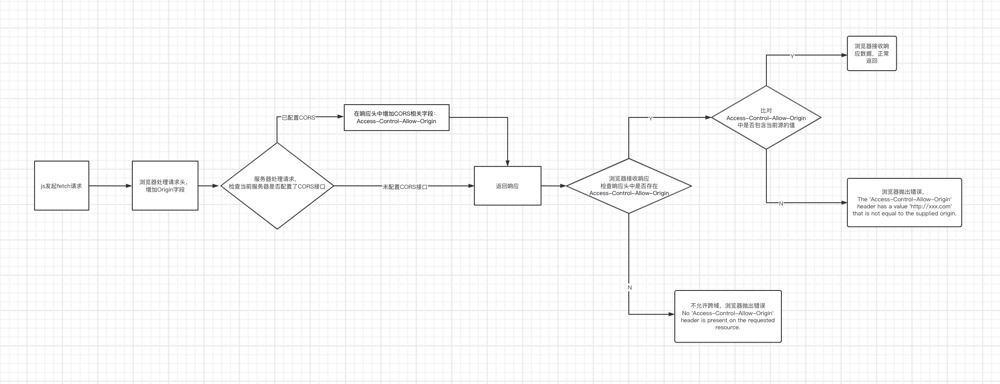
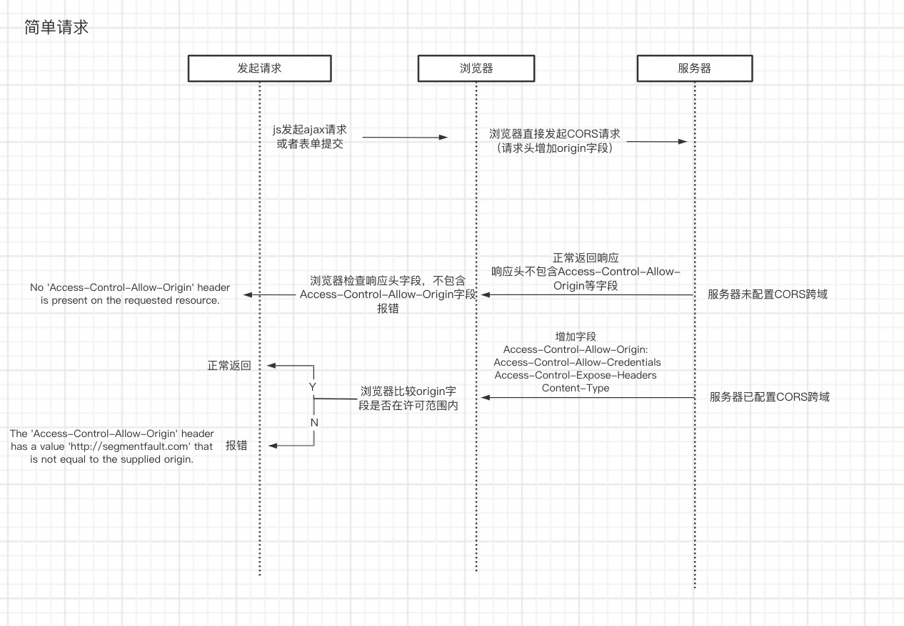
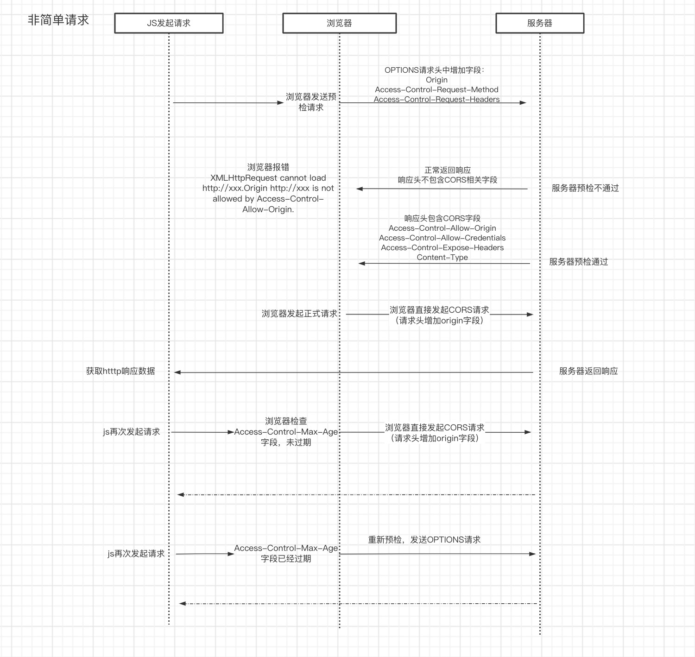

浏览器同源策略
同源策略
什么是同源策略
同源策略是一个重要的安全策略，它用于限制一个源（origin）的文档或者它加载的脚本如何能与另一个源的资源进行交互。非同源下的文档和脚本（JS），不能跨域获取资源。
其中同源是指：
- 协议相同
- 域名相同
- 端口相同
为什么会存在同源策略
同源策略是浏览器为了保护用户信息安全所执行的策略。1995年由 Netscape 公司引入的，目前所有的浏览器都执行这个策略。
因为它的主要目的是为了保证用户信息安全，所以只要涉及到用户信息的获取途径都会被限制，这些信息获取途径包括：
- 通过操作其他网站或者 iframe的
dom来获取用户的表单数据 - 通过获取
cookie，localstorge，sessionstorage，indexDB等缓存信息，来获取用户信息 - 通过发送
ajax / fetch请求，来获取后端的用户信息（提交表单不受跨域限制）
如果不对这些途径加以限制，就可能被恶意网站盗取用户信息。那么恶意是如何通过这几种途径获取信息的呢？举几个案例（来源于彻底理解浏览器的跨域）：
案例：
一、cookie获取发送请求
A 网站是一家银行，用户登录以后，A 网站在用户的机器上设置了一个 Cookie，包含了一些隐私信息（比如存款总额）。用户离开 A 网站以后，又去访问 B 网站，如果没有同源限制，B 网站可以读取 A 网站的 Cookie，那么隐私信息就会泄漏。更可怕的是，Cookie 往往用来保存用户的登录状态，如果用户没有退出登录，其他网站就可以冒充用户，为所欲为。因为浏览器同时还规定，提交表单不受同源政策的限制。
例如
- 用户登录了自己的银行页面 http://mybank.com，mybank.com 向用户的cookie中添加用户标识。
- 用户浏览了恶意页面 evil.com。执行了页面中的恶意AJAX请求代码。
- 向http://mybank.com发起AJAX HTTP请求，请求会默认把http://mybank.com对应cookie也同时发送过去。
- 银行页面从发送的cookie中提取用户标识，验证用户无误，response中返回请求数据。此时数据就泄露了。
- 而且由于Ajax在后台执行，用户无法感知这一过程。
二、dom操作
- 做一个假网站，里面用iframe嵌套一个银行网站 mybank.com。
- 把iframe宽高啥的调整到页面全部，这样用户进来除了域名，别的部分和银行的网站没有任何差别。
- 这时如果用户输入账号密码，我们的主网站可以跨域访问到http://mybank.com的dom节点，就可以拿到用户的输入了，那么就完成了一次攻击
所以针对这三点，浏览器做了同源限制：
无法获取跨域缓存：
cookielocalstorgeindexDB等无法访问非同源网页的 DOM （iframe）。
无法向非同源地址发送 AJAX 请求 或 Fetch 请求（可以发送，但浏览器拒绝接受响应）。
总结一下：
同源策略实际就是浏览器为了保证用户信息安全的策略，限制只有同源的文档或者脚本才能进行交互。其中同源是指协议、域名、端口三点相同。通过限制用户（一般是指开发者）通过操作dom、获取缓存信息以及发送ajax / fetch 请求等方式来获取用户信息来保证用户信息安全。
解决跨域通信
我们在开发中，避免不了要跨域获取信息，其中最常见的就是发送跨域请求（ajax / fetch）来获取资源。那么解决跨域通信问题就成了我们的日常。根据浏览器的同源限制，我们将解决跨域通信分为2个方向：
- 针对跨域的网络请求，需要前后端配合操作来解决，主要方法包括：
- CORS
- JSONP
- 服务器代理
- 针对DOM级别的操作，我们只需要通过前端解决，主要方法包括：
postMassage（HTML5 的 api， 允许两个窗口之间进行跨域发送消息）document.domain（只能用于一、二级域名都相同的情况）
| 通信侧 | 方法 |
|---|---|
| 前端 | postMassage（HTML5 的 api， 允许两个窗口之间进行跨域发送消息）、document.domain（只能用于一、二级域名都相同的情况） |
| 前后端 | CORS、jsonp、服务器代理 |
CORS
CORS（跨域资源共享 Cross-origin resource sharing）是W3C标准，它允许浏览器向跨域服务器发出请求，解决了同源限制中AJAX 请求无法跨域的问题。这种跨域通信解决方案不需要用户做额外的操作，是浏览器和服务器共同实现的。
在浏览器端，不需要用户额外配置，当用户在浏览器发送AJAX请求（例如在js代码中发起了ajax请求），浏览器会自动处理HTTP请求，同时会对服务器端返回的响应进行拦截处理，判断该响应是否同源，进而决定是返回正常的响应还是抛出错误。
而服务器则需要手动配置CORS接口，实现对跨域请求的处理。常用的服务器CORS配置字段如下：
| 协议头参数 | 说明 | 是否必须 | 备注 |
|---|---|---|---|
Access-Control-Allow-Origin |
表示允许跨域请求的域 值为： - 通配符 *：接受任何域的跨域访问<origin>：指定一个来源（只能指定一个）null ：指定来源为 null 此时实际上就是不接受跨域，但是不推荐设置为该值。 因为浏览器在进行 CORS判定时只会判断Access-Control-Allow-Origin字段是否存在而不会判断该字段的值，所以设置为null会导致安全问题 |
T | |
Access-Control-Allow-Methods |
服务器允许跨域请求的 http 方法列表 |
T | 响应预检请求时，必须包含 |
Access-Control-Allow-Headers |
列出了服务器支持的所有头信息字段， 这些字段可以用于预检请求的 Access-Control-Request-Headers |
F | 当预请求（OPTIONS）中包含Access-Control-Request-Headers时，服务器必须设置该字段配置 |
Access-Control-Allow-Credentials |
表示是否允许发送Cookie，只有一个可选值：true（必为小写）。 如果不发送cookie，则直接省略，不写为false |
F | CORS请求默认不发送Cookie和HTTP认证信息要携带这些信息，需要发送方和服务器配置 服务器配置： - Access-Control-Allow-Credentials为true- Access-Control-Allow-Origin不能为*，必须指定域名发送方（JS）: 开发者必须在AJAX请求中打开 withCredentials属性 |
Access-Control-Max-Age |
以秒为单位的缓存时间在有效时间内， 浏览器无须为同一请求再次发起预检请求 |
F |
在Nginx中的配置：
1 | |
CORS的判定流程
CORS基本判定流程如图所示，主要分为三个阶段：
- 浏览器发起请求：处理请求头，增加
Origin字段 - 服务器处理请求，并返回响应：服务器接收请求，根据当前服务器的CORS配置决定是否在响应头中写入
Access-Control-Allow-Origin，并返回正常HTTP响应（注意，因为这里无论是否接收跨域请求，服务器都会返回一个正常HTTP响应，所以无法通过状态码来判断跨域请求是否成功）：- 服务器已配置CORS，写入该字段
- 服务器未配置CORS，不写入该字段
- 浏览器处理响应：检查响应头是否存在
Access-Control-Allow-Origin：- 存在，服务器不允许跨域，浏览器抛出错误，错误类型为：
No 'Access-Control-Allow-Origin' header is present on the requested resource. - 不存在，浏览器进一步比对该值是否包含当前域的值：
- 包含，服务器同意该源的跨域请求，浏览器正常返回响应
- 不包含，服务器允许跨域请求，但拒绝当前源的请求，浏览器抛出错误，错误类型为：
The 'Access-Control-Allow-Origin' header has a value '[http://xxx.com](http://xxx.com/)' that is not equal to the supplied origin.
- 存在，服务器不允许跨域，浏览器抛出错误，错误类型为：

在这三个阶段中，根据请求类型（简单请求 / 非简单请求）的不同，具体的流程处理和操作也会不一致。
简单请求和非简单请求
什么是简单请求和非简单请求呢？实际上这个可以理解为根据当前请求的信息载量来进行区分的。对于信息载量较少的就是简单请求，信息载量多的就是非简单请求。对于这两种请求类型，有明确的定义。
简单请求
- 使用
GET、POST、HEAD其中一种请求方法。 - HTTP的头信息不超出以下几种字段：
AcceptAccept-LanguageContent-LanguageLast-Event-IDContent-Type：只限于三个值application/x-www-form-urlencoded、multipart/form-data、text/plain- 这三个值也是直接用表单提交可以设置的值
XMLHttpRequestUpload：- 请求中的任意
XMLHttpRequestUpload对象均没有注册任何事件监听器； XMLHttpRequestUpload对象可以使用XMLHttpRequest.upload属性访问。
- 请求中的任意
- 请求中没有使用
ReadableStream对象。
对于简单请求类型，整个CORS流程没什么变化（如上图一致），浏览器在第一阶段处理请求时，会直接在当前请求的请求头中增加Origin字段然后发送给服务器。

非简单请求
除了简单请求，其他的都是非简单请求。
非简单请求的流程有所不同。对于非简单请求，浏览器会在正式通信之前，增加一次HTTP查询请求，称为“预检“请求（preflight）。只有通过了预检请求，浏览器才会发出正式通信。这里预检请求的方法是OPTIONS 。一次非简单请求的流程如下：
- 浏览器发起
OPTIONS请求：当浏览器发现当前的请求是非简单请求，会先发起OPTIONS请求。在OPTIONS的请求头中增加3个字段：OriginAccess-Control-Request-Method：列出浏览器的正式请求中会用到的HTTP方法。Access-Control-Request-Headers：指定浏览器的正式请求中会额外需要发送哪些头信息字段。
- 服务器接收
OPTIONS请求，返回响应：服务器收到请求后，会检查服务器的CORS配置和请求头中CORS字段，决定如何返回响应：- 服务器未配置CORS接口 or 服务器配置的CORS接口和请求头中的CORS字段不匹配：服务器否定此次预检请求，返回正常的HTTP响应，响应头中不包含CORS相关字段
（未配置 || 不匹配 ⇒ 否定：不包含）。 - 服务器已配置 and 配置的CORS接口和请求头的CORS字段匹配：服务器肯定此次预检请求，返回正常的HTTP响应，响应头中包含CORS相关字段
（配置 && 匹配 ⇒ 肯定：包含）；
- 服务器未配置CORS接口 or 服务器配置的CORS接口和请求头中的CORS字段不匹配：服务器否定此次预检请求，返回正常的HTTP响应，响应头中不包含CORS相关字段
- 浏览器处理响应：当浏览器接收到服务器的响应之后，检查响应头是否包含CORS相关字段：
- 不包含，浏览器抛出错误
- 包含，服务器肯定此次预检请求，浏览器发出正式的
CORS请求获取数据，这个正式的CORS请求的流程和简单请求一致。

下面列出了CORS请求中会用到的协议头字段以及说明：
| 协议头参数 | 类型 | 说明 | 是否必须 | 备注 |
|---|---|---|---|---|
Origin |
请求头 | 该字段用来说明，本次请求来自哪个源（协议 + 域名 + 端口）。 | T | |
Access-Control-Request-Method |
请求头 | 该字段用于预检请求，指名浏览器正式的CORS请求会用到的HTTP方法 | T | 发送预检请求时，必须包含 |
Access-Control-Request-Headers |
请求头 | 该字段用于预检请求，指名浏览器正式的CORS请求会额外发送的头信息字段 | T | 发送预检请求时，必须包含 |
Access-Control-Allow-Origin |
响应头 | （同服务器配置字段含义） | T | |
Access-Control-Expose-Headers |
响应头 | 该字段指明服务器允许哪些响应头可以暴露给浏览器中运行的脚本（JS），以响应跨源请求。 在没有额外指明的情况下，CORS请求时，XMLHttpRequest对象的 getResponseHeader()方法只能拿到6个基本字段：Cache-Control、Content-Language、Content-Type、Expires、Last-Modified、Pragma。如果想拿到其他字段，就必须在 Access-Control-Expose-Headers里面指定。 |
F | |
Access-Control-Allow-Methods |
响应头 | （同服务器配置字段含义） | T | |
Access-Control-Allow-Headers |
响应头 | （同服务器配置字段含义） | F | |
Access-Control-Allow-Credentials |
响应头 | （同服务器配置字段含义） | F | |
Access-Control-Max-Age |
响应头 | （同服务器配置字段含义） | F |
JSONP
JSONP 的原理就是利用 <script> 标签的 src 属性没有跨域的限制，通过指向一个需要访问的地址，由服务端返回一个预先定义好的 Javascript 函数的调用，并且将服务器数据以该函数参数的形式传递过来，此方法需要前后端配合完成。
script标签 src可跨域- 将回调方法作为get参数传给后端
- 后端返回一个js，调用这个回调，并把数据传给回调
1 | |
服务器代理
浏览器对网络请求做了处理，所以通过从浏览器端发送的请求都会有跨域限制，但是服务器请求服务器就不存在这个问题。所以可以搭建一个代理服务器，将前端资源和代理服务器部署到一个域下，然后前端请求代理服务器，再通过代理服务器转发请求，从而实现请求跨域。
document.domain
该方式只能用于二级域名相同的情况下，比如 a.test.com 和 b.test.com 适用于该方式。
只需要给两个页面都添加 document.domain = 'test.com'，通过在 a.test.com 创建一个 iframe，去控制 iframe 的 window，从而进行交互。
postMessage
window.postMessage 是一个 HTML5 的 api，允许两个窗口之间进行跨域发送消息。
这种方式通常用于获取嵌入页面中的第三方页面数据。一个页面发送消息，另一个页面判断来源并接收消息
1 | |
需要跨域请求的情况
- 由 XMLHttpRequest 或者 Fetch 发起的跨源 HTTP 请求。
- Web 字体 (CSS 中通过
@font-face使用跨源字体资源)，因此，网站就可以发布 TrueType 字体资源，并只允许已授权网站进行跨站调用。 - WebGL 贴图
- 使用
drawImage将Images/video画面绘制到canvas
参考
彻底理解浏览器的跨域
跨域资源共享 CORS 详解
你真的会使用XMLHttpRequest吗？
跨源资源共享（CORS）
九种跨域方式实现原理（完整版）